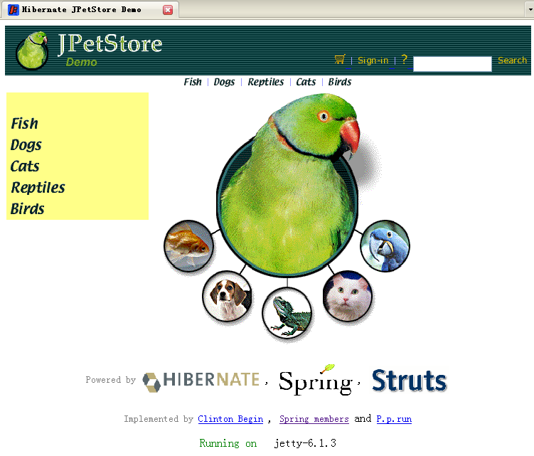

Description
Rewrite Spring's Jpetstore sample project by using Hibernate as its
persistence layer, and removed SpringMVC web layer, that's now only
Struts' based web layer has been ported.
The project has been tested on several database and application/web servers:
The version 2.0 is out hjpetstore v2 with more interesting and latest technologies.
Configuration
DataBase
Java EE (J2EE) server / Servlet Container
- Sun Application Server 8.2, Sun Application Server 9.0, 9.1
- GlassFish v1, v2
- Tomcat 5.5.x, 6.x
- JBoss 4.0.4, 4.0.5
- Jetty 6.1.3
Among them, the JNDI DataSource has successfully run on Sun
Application Server/GlassFish and JBoss.
Documentation (in Chinese)
There's a serial documentation on my
blog, which cover:
Architecture
Design
Data
Layer Design
Controller
Layer Design
Web
/ Representation Layer Design
Deployment
Run Instructions
Initializing the mysql db for this test, the instruction follows:
1. Check out this project into NetBeans, resolving any build path error.
2. Set up MySql schema hjpetstore and create a user hjpetstore/hjpetstore for username/password
mysql -h localhost -u root -p < $hjpetstore\conf\jpetstore_mysql.sql
Enter password: ******** (root's password to run)
3. Data loading
3.1 Run the checked out project - In netbeans, right click hibernateJpetstore | run, this will auto-generated all mapped table according to *.hbm files.
3.2 In NetBeans, run the content of $hjpetstore\db\mysql\jpetstore-mysql-dataload.sql
This will load all initail data into tables.
I trust you have known how to do this in NetBeans.
3.2.1 Or you can run it in Mysql Query browser tool.
The context url is /hjpetstore for all
server:
Screenshoots
See the footnote part for the server powered by...
1. Powered by Sun Application Server 9.0
2. Powered by Jetty6

3.Powered by Tomcat5.5